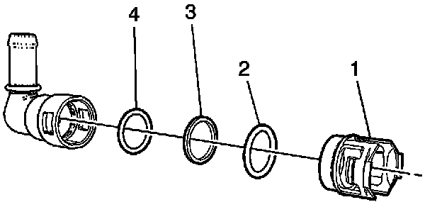
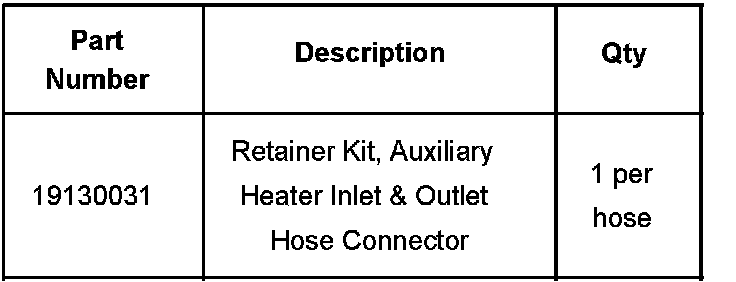
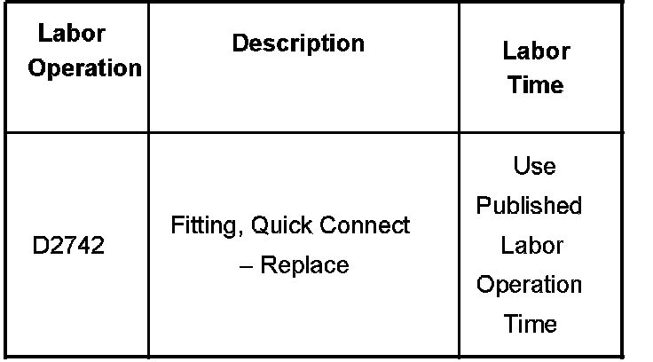

A/C - Coolant Leak at Rear of Vehicle
Bulletin No.: 07-01-37-002Date: March 30, 2007
TECHNICAL
Subject:
Coolant Leak at Rear of Vehicle (Install Auxiliary Heater Inlet and Outlet Hose Quick Connector Service Kit)
Models:
2005-2007 Cadillac Escalade, Escalade ESV
2005-2007 Chevrolet Suburban, Tahoe
2005-2007 GMC Yukon Models
with Auxiliary Heater (RPO C36)
Condition
Some customers may comment on a coolant leak at the rear of the vehicle.
Cause
This condition may be due to the auxiliary heater hose quick connection leaking or the retaining clip is broken.
Correction

Technicians are to install an auxiliary heater inlet and outlet quick connector service kit instead of replacing the entire auxiliary heater hose line set. The components of the service kit are shown in the illustration above. The kit consists of an instruction sheet, retaining clip (1), second 0-ring (2), mid-spacer (3), and first 0-ring (4). Refer to the Auxiliary Heater Inlet and Outlet Hose Connector Retainer and Seal Replacement procedure in SI for more information on how to install this service kit (Document ID# 1887838).

Parts Information
Warranty Information

For vehicles repaired under warranty, use the table.

Disclaimer